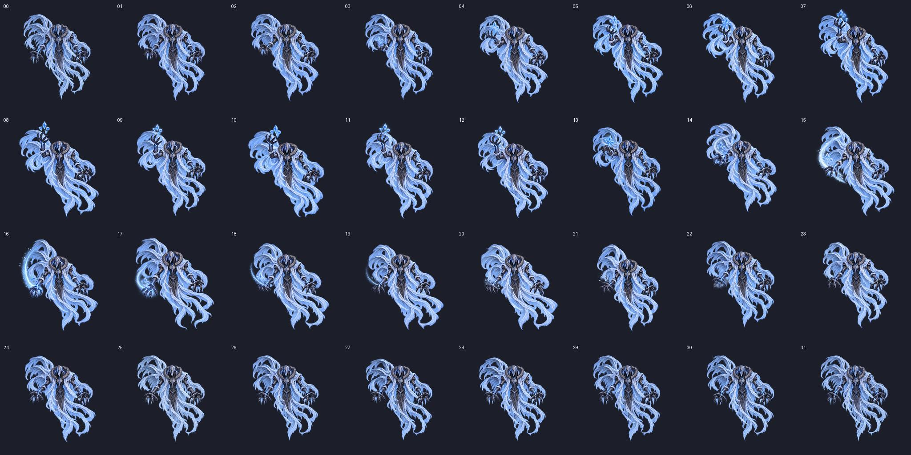

최신 v02: 실제 PNG 프레임을 수정한 결과와 동일 FPS 비교 보기
한팔 얼음 시전 · 올리기 → 내리기 → Idle
기존 OneArm UpDown 동작을 바탕으로 얼음 조각 4개를 들어 올리고, 서리 궤적을 남기며 손을 내립니다. 몸통·천의 후행과 Idle 복귀를 확인하세요.
로딩 중
00 / 31
32프레임 · 1024×1024 셀 · PPU 24 · 중앙 피봇. 첫·끝은 Idle 원본입니다. 기본 ‘구간별 속도’는 올리기 1.4초 → 최고점 유지 0.8초 → 내리기 0.5초입니다. 최고점 10번 자세를 0.35초 유지하고 복귀 속도는 이전과 같습니다. 고정 fps를 선택하면 모든 프레임을 같은 시간으로 재생합니다. Unity 애니메이션 클립은 만들지 않았습니다.
검증 범위: 개별 PNG·시트·Unity 슬라이스. 실제 게임 재생은 미검증입니다. 여백에 알파 1~2/255의 미세 픽셀이 남아 엄격한 64px 완전 투명 기준은 미충족입니다.
전체 프레임 펼치기
